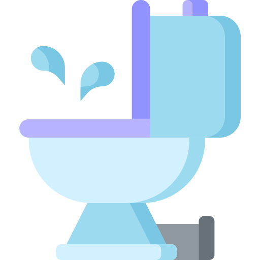
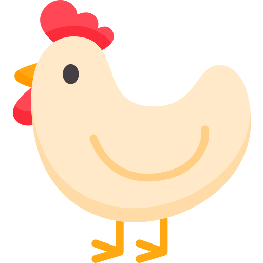

Services Offered
1. Education

Creating joyful, empowering education which enhances livelihood options, creating socially and environmentally conscious citizens who are catalysts for change.
269 Million
ILLITERATE PEOPLE IN INDIA
35%
OF INDIA'S POPULATION CANNOT RED OR WRITE
1 OUT OF 4
GIRLS DROPS OUT OF SCHOOL BEFORE GRDADE 8
At Gratefull Giving, we work with 1,36,666 children in 1,361 schools, 806 anganwadis and 41 Junior colleges to ensure that learning is fun, learning is holistic and learning is empowering. We believe good education is one that broadens horizons, creates choices for the child to achieve her/his dreams.

“A child must know that he is a miracle, that since the beginning of the world there hasn’t been, and until the end of the world there will not be, another child like him.” ~ Pablo Casals
OUR IMPACT
We work with 1,361 Schools, 806 Anganwadis, 41 Junior Colleges and have impacted 1,36,666 children to ensure that learning is fun, learning is holistic & learning is empowering
Leadership Training

2,865 schools with toilets, drinking water facilities libraries, Math's kit
Infrastructure upgrades

1214 principles trained
In-service training

3,534 teachers trained
Career counseling
60,625 children counselled for better future
Scholarships

6,531 students provided with scholarship
Children with special needs
323 teachers trained for teaching CWSN
PROGRAMMES
MINDSET CHANGE
To empower school staff to lead by example, we provide extensive le adership training to principals and in-service training to teachers and anganwa di workers. In addition, we have setup a learning resource center exclusively for children with special needs (CWSN) and t rained another 323 teachers to teach and train these special children.
ENABLING ENVIRONMENT
Interventions include Infrastructure upgrades / Learning tools such as drinking water and hand wash stations and sanitation (separate urinals and toilets for boys and girls respectively; as per UNICEF guidelines), setting up of libraries, computer labs, activity based learning, science and math kits for interactive and joyful learning.
FUTURE READY
We provide two types of scholarships to deserving students who come from unprivileged families. Mass Scholarships are for students to uptake Grade XI and XII whereas Excellence Scholarships are for students who want to pursue professional courses like CA, CS, Engineering and Medical. In addition to that we provide career counselling to prepare students and parents for future opportunities. Forming and strengthening of school management committees who are empowered to act upon any issues pertaining to their school management and ensure corrective action through appropriate mechanisms.
2. Health Care

Ensuring universal access to public and private healthcare services for our rural communities.
8 Million
PEOPLE ARE BLIND IN INDIA
46%
CHILDREN UNDER THE AGE OF 3 ARE MALNOURISHED
25%
OF GLOBAL MATERNAL DEATHS OCCUR IN INDIA
At Greatfull Giving, we create and empower a strong cadre of community health workers whom we call ‘Gratefull Givers’ They serve as important links between community and various public and private health facilities besides providing paramedical aid to the villagers. We also collaborate with the Government and private frontline health personnel including doctors, ASHA workers, Aganwadis workers and ANMs for last mile delivery of health and nutrition services.

“If kids come to us from strong, healthy, functioning families, it makes our job easier. If they do not come to us from strong, healthy, functioning families, it makes our job more important.” — Barbara Colorose
OUR IMPACT
We create & empower a strong cadre of community health workers whom we call 'Gratefull Mitras'. Ensuring public & private healthcare services for our rural communities
Community health workers
1,926
Children with special needs
943 children supported with assistive visual/ hearing aids
highly trained Swades Mitras (SM) serving a population of close to
3,71,000
completed medication cycle
5202
Anaemia care
44,825 people screened
Cardiac care
162 children supported for operation.
PROGRAMMES
PEDIATRIC CARDIAC CARE
Congenital heart disorders if identified on time reduces physical and mental suffering for the victims and their families. We identify and provide complete diagnostic support to children aged 1 to 18 years suffering from a cardiac disorder in our rural communities. Those in need of surgeries are linked to our partner hospitals for end-to-end treatment free of cost.
VISION CARE
We have three mobile vans which are fully equipped for diagnostic screening of eye defects by ophthalmologists. We conduct screening, identification and advise on necessary treatments for eye diseases in these vans. Those identified with refractive errors are given spectacles free of cost whereas those diagnosed with cataract are accompanied to our partner hospitals Laxmi Charitable Trust and HV Desai Eye Hospital for free surgery.
ANAEMIA ALLEVIATION
Our goal is to ensure an anemia-free geography for which we do preliminary pricking and screening of hemoglobin levels among students. We then link with the Government mechanism to administer right doses to these children and conduct various awareness building programs for students, teachers, and parents so they adapt and influence others in the community on the causes and repercussions of iron deficiency.
3. water and sanitation
Greatefull Givers will ensure that every household in its geography has a toilet of their own and receives litres of potable water/ day through taps installed at homes.
37.7+ Million
PEOPLE ARE AFFECTED BY WATER BONE DISEASES
86%
PEOPLE IN INDIA DO NOT HAVE ACCESS TO TOILETS
In addition to the problems surrounding drinking water, water scarcity for agricultural and other use causes chronic economic and social issues. Despite 3,600 mm of annual rainfall, the soil and terrain of rural Maharashtra, our current geography, makes water management a severe problem.

“Don’t be the leak in our global flow.” – The Dharma Trails
OUR IMPACT
We ensure that every home is connected with drinking water and has a toilet of their own Impacting
Household Toilets
26,447 constructed and 1,419 declared and verified open defecation free
Drinking water schemes

41,692 drinking water schemes with taps in homes.
Water facilities at school

230 schools with drinking water and sanitation facilities
PROGRAMMES
HOUSEHOLD DRINKING WATER
We believe that access to drinking water is a fundamental human right and our goal is to ensure every household in our geography gets potable drinking water up to 200 litres per day. We bring water from the source to storage reservoir and from there into each household through a robust distribution grid in every water project. Our team of water engineers and field staff is equipped for conducting overall geophysical and technical surveys while the community does voluntary labor with us to ensure water reaches their homes. Furthermore, for making this water projects sustainable we identify water committees who are representatives of the community and train them extensively for operations and maintenance of their hamlet’s water project.
SANITATION
Just like access to water is of prime importance, having a household toilet is critical to the development of rural areas. Our goal is to ensure every individual from a rural family has access to a toilet in his household and uses it every day. In cases where there are space constraints in a household premise, not more than two households will share a single toilet. For sustainability and behavior change we organize various street plays, community-led total sanitation programme, swachhta raths, rallies and other modes to engage with the community and ensure an open defecation free geography.
WATER FOR IRRIGATION
Cultivation of second and third crop in a year leads to good income augmentation of farmers and empowers them to come out of poverty, restricts migration and improves their standard of living. For year-long agricultural cultivation, regular supply of irrigation is a must. We have identified small tributaries in our six blocks, where we build check dams to conserve millions of litres of water. This water is supplied to the farms through drip or flood irrigation thus making acres and acres of land cultivable and beneficial for farmers in the geography.
4. Econimic Development

To ensure every household achieves an annual income of minimum 2 Lakhs per annum through engaging in multiple livelihoods.
37.7+ Million
PEOPLE ARE AFFECTED BY WATER BONE DISEASES
86%
PEOPLE IN INDIA DO NOT HAVE ACCESS TO TOILETS
While 60% of India's population is directly dependent on agriculture, its contribution to the country's GDP is only 20%, indicating overdependence, unemployment and underemployment in the sector. With more than half the country's populations' direct dependence on this sector, we believe that there is a need to bring paradigm shift towards agriculture and its numerous tangible and intangible benefits.
“The ultimate resource in economic development is people. It is people, not capital or raw materials that develop an economy.” – Peter Drucker
OUR IMPACT
We will uplift and enrich the lives of its farmers and entrepreneurs, targeting annual income of INR 2,00,000 per household
Capacity building

29,018 farmers are trained with new farming techniques
Advanced paddy cultivation

12,050 farmers trained for progressive increase in yield & income
Water for irrigation
3,378 Acres of land brought under cultivation via rain-water harvesting & use of drip infrastructure
Poultry
6,845 households supplemented
PROGRAMMES
ON-FARM PROGRAMME
The focus here is on bringing more cultivable land under assured irrigation, thus enabling farmers to sow economically viable crops like vegetables in rabi season, and increasing productivity and survival percentage of existing and recently planted orchards. These initiatives are bolstered by exposure visits for new adoptees and imparting technical knowledge by agri domain experts which aids in augmenting income levels of farmers who are otherwise largely dependent on growing rainfed paddy in the kharif season.
OFF-FARM PROGRAMME
Off-farm activities include dairy, goat rearing, fishing and poultry. Dairy is introduced to develop an ecosystem around dairy farming and promote dairy as a sustainable livelihood option, which creates a steady revenue stream throughout the year for households. It also includes providing sustainability options to farmers like hydroponic fodder, azolla, mineral mixture, nutrition management and advisory services coupled with market linkages.Poultry is tailor made for the weaker sections of the community who are unable to adopt other economic development programmes. It provides a regular revenue and healthy protein source for the community. The focus here is on women SHGs and is helping in developing their entrepreneur skills. Goat rearing as a livelihood option is being adopted mainly by the tribal community, women lead households and poorest of poor sections of the society. Swades has helped in introduction of improved breeds of goat, veterinary support and health advisory to strengthen and make this programme sustainable.
NON-FARM PROGRAMME
The non- farm activities include skills training to youths and their placement in formal employment and enterprise development. It aims at enhancing the skills of the unemployed youth, thus empowering them to be placed in better jobs with higher salaries. This helps in augmenting the income levels of the household and instills a sense of pride amongst rural youth. Supporting new entrepreneurs with adequate training, exposure visits and best practises for enterprise development is also a part of the non-farm programme.